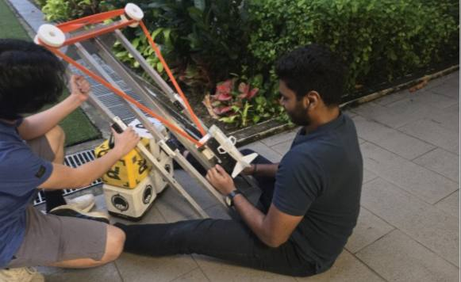
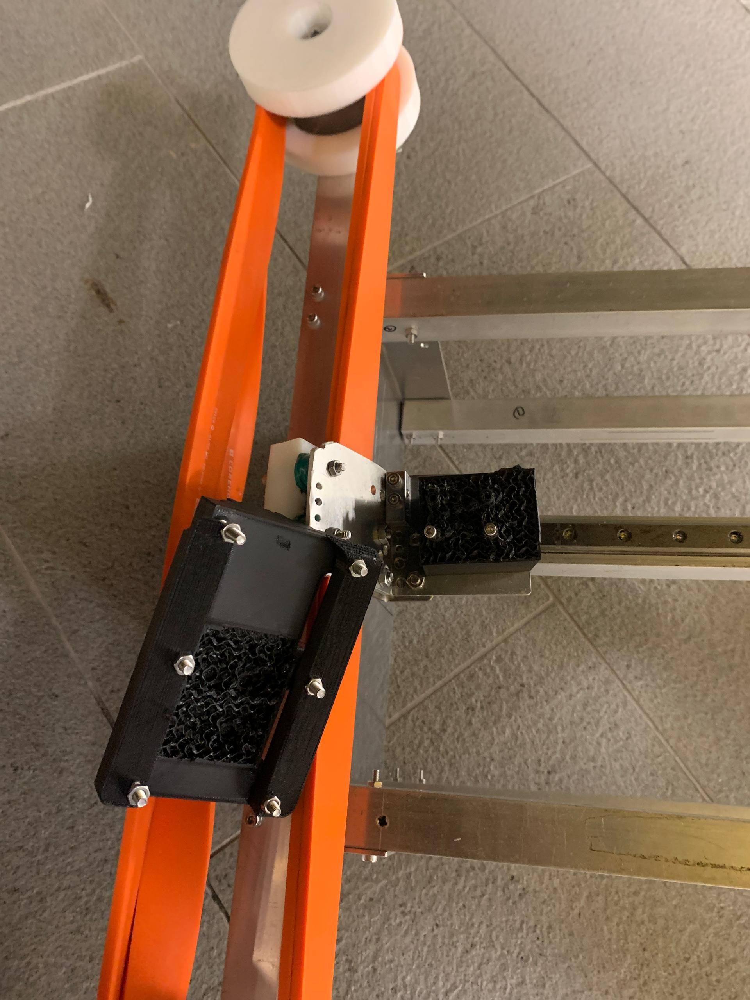
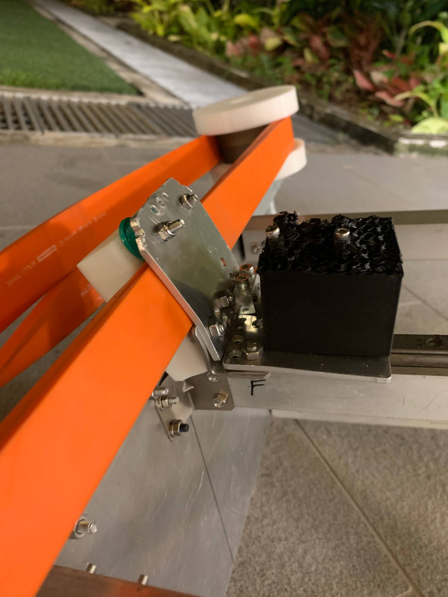
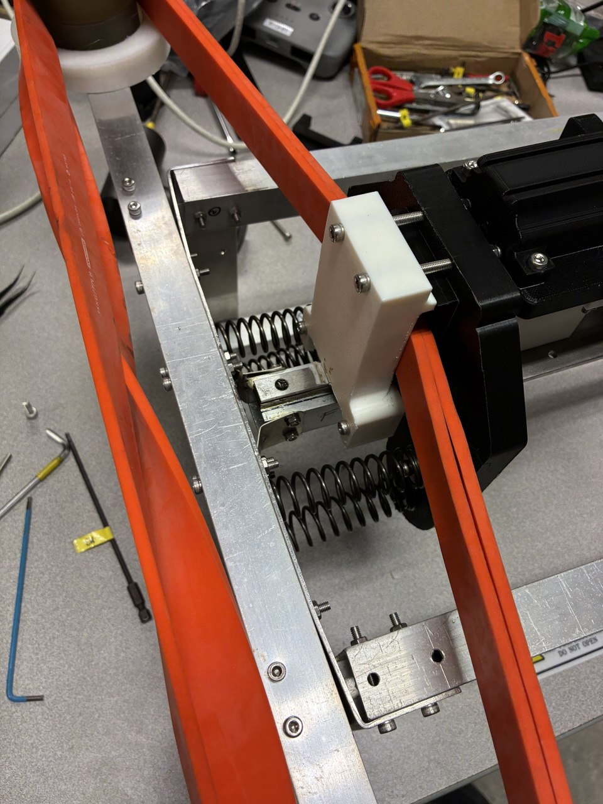
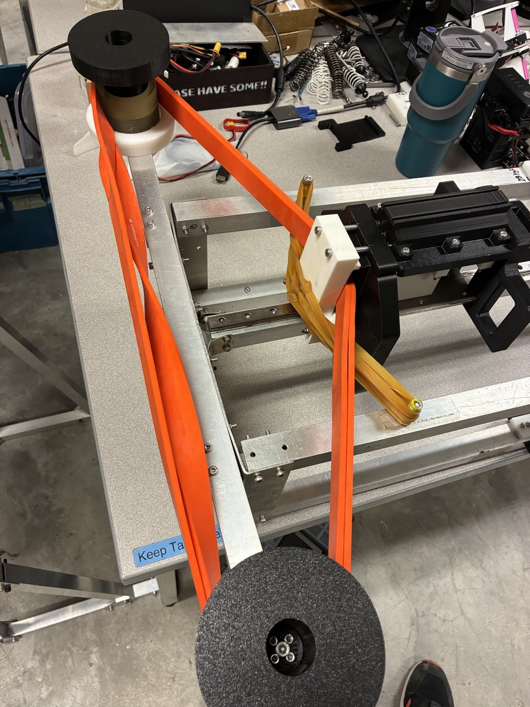
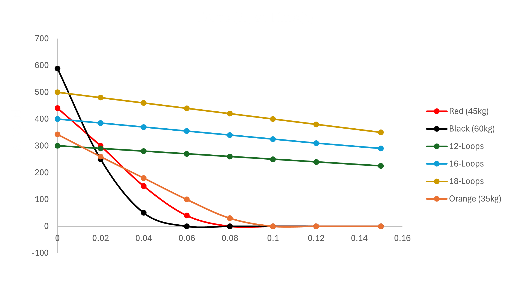
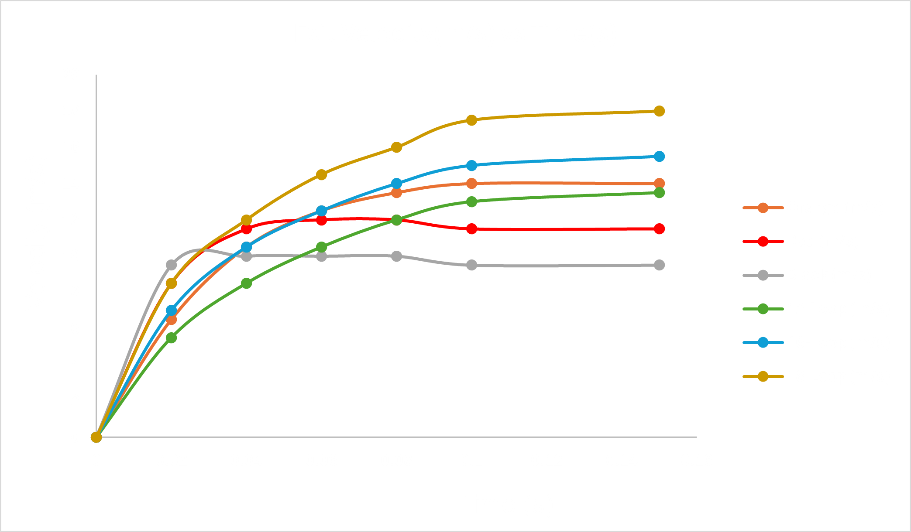

<style>
  /* --- D.A.R.T. Launcher 3D Hotspots (Hover Version) --- */

  /* The Anchor Dot */
  .hotspot {
    background: #ef4444; /* red-600 */
    border-radius: 50%;
    border: 2px solid #ffffff33;
    width: 14px;
    height: 14px;
    cursor: pointer;
    position: relative;
    transition: transform 0.3s ease;
  }

  .hotspot:hover {
    transform: scale(1.2);
    background: #ffffff;
  }

  /* The Info Box (Annotation) - Hidden by default */
  .annotation {
    position: absolute;
    bottom: 20px; /* Positions it above the dot */
    left: 50%;
    transform: translateX(-50%);
    background: rgba(9, 9, 11, 0.95); /* zinc-950 */
    border: 1px solid #3f3f46; /* zinc-700 */
    color: #ffffff;
    padding: 10px 14px;
    border-radius: 6px;
    width: 200px;
    text-align: center;
    opacity: 0; /* HIDE BY DEFAULT */
    pointer-events: none;
    transition: opacity 0.3s ease, bottom 0.3s ease;
    z-index: 20;
  }

  /* Show annotation on hover */
  .hotspot:hover .annotation {
    opacity: 1;
    bottom: 25px; /* Subtle float-up effect */
  }

  /* Hide when the hotspot is behind the model */
  .hotspot:not([data-visible]) {
    opacity: 0.2;
    pointer-events: none;
  }

  /* Hotspot Typography */
  .hotspot-title {
    display: block;
    font-weight: 800;
    text-transform: uppercase;
    font-size: 10px;
    letter-spacing: 0.1em;
    color: #ef4444;
    margin-bottom: 2px;
  }

  .hotspot-text {
    display: block;
    font-size: 12px;
    line-height: 1.4;
    color: #d1d1d6;
  }

  model-viewer {
    width: 100%;
    height: 100%;
    background-color: transparent;
  }
</style>


<section id="launcher" class="pt-24 border-t border-zinc-800" data-aos="fade-up">
    <div class="flex flex-col md:flex-row items-start justify-between gap-12 pb-12">
        
        <div class="flex-1" px-4 md:px-0">
            <h3 class="text-4xl font-bold mb-6 text-red-primary uppercase tracking-tighter">
                Launcher Design
            </h3>
            <p class="text-gray-400 text-xl md:text-2xl leading-relaxed border-l-2 border-red-900 pl-8">
                Mastering high-velocity impulse, the D.A.R.T. launcher utilizes a 750mm acceleration stroke and a 130mm arrestor zone to convert 10Nm of torque into a consistent 25-meter ballistic range
            </p>
        </div>

        <div class="w-48 shrink-0 text-center group">
            <div class="relative mb-4">
                
                
                <div class="absolute -bottom-2 -right-2 bg-red-600 text-[9px] font-black text-white px-2 py-1 rounded uppercase tracking-tighter">
                    Lead Eng
                </div>
            </div>
            
            <h4 class="text-white font-bold text-xl mb-0">Shyam</h4>
            <p class="text-red-primary font-mono text-xs uppercase tracking-widest font-bold mt-1">Y4 ME</p>
        </div>

    </div>

    <div class="grid grid-cols-1 md:grid-cols-3 gap-6 mb-24 px-4">
        <div class="bg-zinc-950 rounded-2xl border border-red-900/30 p-4 h-[400px] relative">
            <span class="absolute top-4 left-4 z-10 bg-red-600 text-[10px] font-black px-2 py-1 rounded uppercase">Final V3</span>
            <model-viewer src="assets/launcher_v3.glb" camera-controls auto-rotate shadow-intensity="1" class="w-full h-full"></model-viewer>
        </div>

        <div class="bg-zinc-950 rounded-2xl border border-zinc-900 p-4 h-[400px] relative">
            <span class="absolute top-4 left-4 z-10 bg-zinc-800 text-[10px] font-black px-2 py-1 rounded uppercase">Iteration V2</span>
            <model-viewer src="assets/alu_launcher_v2.glb" camera-controls shadow-intensity="1" class="w-full h-full"></model-viewer>
        </div>

        <div class="bg-zinc-950 rounded-2xl border border-zinc-900 p-4 h-[400px] relative">
            <span class="absolute top-4 left-4 z-10 bg-zinc-800 text-[10px] font-black px-2 py-1 rounded uppercase">Prototype V1</span>
            <model-viewer src="assets/practice_launcher.glb" camera-controls shadow-intensity="1" class="w-full h-full"></model-viewer>
        </div>
    </div>


    <div class="space-y-12 mb-32">
        <div class="max-w-4xl">
            <h4 class="text-red-600 font-mono text-lg uppercase tracking-[0.3em] mb-4 font-bold italic">Following Interim Progress, Nov 2025</h4>
            <h2 class="text-4xl font-bold text-white mb-6">Prototype V1: Scrap-metal proof of concept</h2>
            <p class="text-zinc-250 text-lg leading-relaxed">
                Our initial development began with a makeshift scrap-metal assembly to test basic propulsion. This was necessary since NUS Calibur Robotics has never attempted to use elastic potential energy as means of propulsion. As reported in the interim report, the launcher proved the elastic bands to be promising. The projectile travelled in a straight line consistently with no visible roll, covered a range of 20m and followed a projectile motion in the air.
            </p>
        </div>

        <div class="grid grid-cols-1 md:grid-cols-2 gap-4">
            <video src="assets/scrapmetallauncher.MOV" controls playsinline class="rounded-xl border border-zinc-800 w-full">Your browser does not support the video tag.</video>
            
        </div>

        <div class="max-w-4xl">
            <p class="text-zinc-250 text-lg leading-relaxed">
                However, this prototype yielded a critical failure; the projectile carrier (shuttle) collided violently with the front frame, proving that <b>unmanaged kinetic energy is destructive.</b>
            </p>
        </div>

        <div class="grid grid-cols-2 gap-4 max-w-2xl mx-auto">
            
            
        </div>

        <div class="grid grid-cols-1 md:grid-cols-3 gap-8 pt-12">
            <div class="p-8 bg-zinc-950 border border-zinc-900 rounded-2xl">
                <h5 class="text-red-600 font-bold mb-4 uppercase text-sm tracking-widest">Structural Damage</h5>
                <p class="text-zinc-300 text-sm">Impact force at $v_{max}$ compromised the front frame and fractured the projectile carrier.</p>
            </div>
            <div class="p-8 bg-zinc-950 border border-zinc-900 rounded-2xl">
                <h5 class="text-red-600 font-bold mb-4 uppercase text-sm tracking-widest">Acoustic Energy Loss</h5>
                <p class="text-zinc-300 text-sm">Energy dissipated as sound/vibration rather than being transferred to the projectile.</p>
            </div>
            <div class="p-8 bg-zinc-950 border border-red-900/30 rounded-2xl">
                <h5 class="text-red-600 font-bold mb-4 uppercase text-sm tracking-widest">The "Spring" Misconception</h5>
                <p class="text-zinc-300 text-sm">Heavy-duty springs acted as parasitic absorbers, robbing the projectile of momentum before exit.</p>
            </div>
        </div>

        <div class="grid grid-cols-1 xl:grid-cols-2 items-center gap-8 xl:gap-16 bg-zinc-950/50 p-8 md:p-12 rounded-[2rem] border border-zinc-900 shadow-2xl">
    
            <div class="flex flex-row justify-center gap-4 md:gap-8 w-full">
        
                <div class="flex flex-col items-center gap-4 group flex-1 max-w-[320px]">
                    
                    <p class="text-zinc-300 font-mono text-[10px] md:text-[12px] uppercase tracking-[0.3em] group-hover:text-red-500 transition-colors text-center">
                        spring damper
                    </p>
                </div>

                <div class="flex flex-col items-center gap-4 group flex-1 max-w-[320px]">
                    
                    <p class="text-zinc-300 font-mono text-[10px] md:text-[12px] uppercase tracking-[0.3em] group-hover:text-red-500 transition-colors text-center">
                        rubber band damper
                    </p>
                </div>
            </div>

            <div class="w-full max-w-2xl mx-auto xl:mx-0">
                <h5 class="text-red-600 font-mono text-sm md:text-base uppercase tracking-[0.4em] mb-4 text-center xl:text-left">
                    Mechanical Damping Analysis
                </h5>
                <div class="border-l-2 border-red-900 pl-6 md:pl-10">
                    <p class="text-zinc-400 text-base md:text-lg xl:text-xl leading-relaxed font-light italic">
                        To prevent the carrier from smashing into the front of the launcher, two damping methods were implemented. 
                        Testing revealed that <b>pre-tensioned elastic rubber band damping</b> provided superior energy dissipation 
                        compared to mechanical springs—which acted as a "dead stop"—effectively preventing the structural fatigue 
                        observed in Prototype 0.
                    </p>
                </div>
            </div>
        </div>
    </div>

    <div class="bg-zinc-950 rounded-[3rem] p-12 md:p-20 border border-zinc-900 mb-32">
        <div class="grid grid-cols-1 lg:grid-cols-2 gap-16 items-center">
            <div>
                <h2 class="text-4xl font-bold text-white mb-8">Strategic Pivot: The Deceleration Zone</h2>
                <p class="text-zinc-250 text-lg mb-8">
                    Inspired by <b>Aircraft Carrier Steam Catapults</b>, we realized high-velocity ballistics require a distinct separation between the Power Stroke and the Arrestor Stroke.
                </p>
                
                <div class="space-y-6">
                    <div class="flex items-center gap-6 p-4 rounded-xl bg-zinc-900/50 border border-zinc-800">
                        <div class="w-1/2 text-red-600 font-mono text-sm uppercase">Aircraft Carrier</div>
                        <div class="w-1/2 text-white font-mono text-sm uppercase">D.A.R.T. System</div>
                    </div>
                    <div class="flex gap-6 px-4">
                        <div class="w-1/2 text-zinc-300 text-sm">Shuttle connects to nose wheel</div>
                        <div class="w-1/2 text-zinc-300 text-sm">Feeder loads projectile into carrier sled</div>
                    </div>
                    <div class="flex gap-6 px-4 border-t border-zinc-900 pt-4">
                        <div class="w-1/2 text-zinc-300 text-sm">High-pressure steam propulsion</div>
                        <div class="w-1/2 text-zinc-300 text-sm">High-tension spearfishing bands</div>
                    </div>
                    <div class="flex gap-6 px-4 border-t border-zinc-900 pt-4">
                        <div class="w-1/2 text-zinc-300 text-sm">Water brakes stop shuttle</div>
                        <div class="w-1/2 text-zinc-300 text-sm">Elastic damping bands arrest sled</div>
                    </div>
                </div>
            </div>
            <div class="space-y-6">
                <video src="assets/catapultexpl.MP4" controls playsinline class="rounded-2xl shadow-2xl w-full">Your browser does not support the video tag.</video>
                <p class="text-zinc-300 text-sm italic text-center uppercase tracking-widest">Reference: Naval Steam Catapult Mechanics</p>
            </div>
        </div>
    </div>

    <div class="mb-32">
        <div class="flex flex-col lg:flex-row gap-12 items-center mb-16">
            <div class="flex-1">
                <video src="assets/launcher_expl.mp4" controls playsinline class="rounded-3xl border border-zinc-800 w-full shadow-2xl">Your browser does not support the video tag.</video>
                <p class="text-center text-zinc-300 text-[10px] uppercase mt-4 tracking-tighter">Click to play: Final Launcher Operation</p>
            </div>
            <div class="flex-1">
                <h4 class="text-2xl font-bold text-white mb-6 uppercase tracking-tight">Zonal Launcher Architecture</h4>
                <table class="w-full text-left border-collapse">
                    <thead>
                        <tr class="border-b border-zinc-800">
                            <th class="py-4 text-red-600 font-mono text-sm uppercase">Zone</th>
                            <th class="py-4 text-red-600 font-mono text-sm uppercase">Length</th>
                            <th class="py-4 text-red-600 font-mono text-sm uppercase">Function</th>
                        </tr>
                    </thead>
                    <tbody class="text-zinc-400 text-sm">
                        <tr class="border-b border-zinc-900">
                            <td class="py-6 text-white font-bold">Acceleration</td>
                            <td class="py-6">750.0 mm</td>
                            <td class="py-6">Elastic bands provide continuous positive work ($+W$).</td>
                        </tr>
                        <tr class="border-b border-zinc-900">
                            <td class="py-6 text-white font-bold">Deceleration</td>
                            <td class="py-6">129.2 mm</td>
                            <td class="py-6">Secondary damping bands safely arrest the carrier.</td>
                        </tr>
                        <tr>
                            <td class="py-6 text-red-600 font-bold italic">Total</td>
                            <td class="py-6 font-bold text-white">879.2 mm</td>
                            <td class="py-6 italic">Optimized within RMUC size constraints.</td>
                        </tr>
                    </tbody>
                </table>
            </div>
        </div>

        <div class="w-full bg-zinc-950 border border-zinc-900 rounded-3xl p-12 text-center">
            <h5 class="text-white font-bold mb-8 uppercase tracking-[0.2em]">Deceleration Visualization</h5>
            <video src="assets/decel.mp4" autoplay loop muted playsinline class="w-full max-w-4xl mx-auto rounded-xl shadow-2xl mb-8"></video>
            <p class="text-zinc-500 text-sm max-w-2xl mx-auto">
                Slow-motion capture of the 130mm deceleration zone in action. Note the projectile separation occurs exactly as the primary bands reach zero-tension, maximizing momentum transfer.
            </p>
        </div>
    </div>

    <div class="grid grid-cols-1 md:grid-cols-3 gap-8 pb-32 px-6">
        <div class="p-8 bg-zinc-950 border border-zinc-900 rounded-2xl relative overflow-hidden group">
            <div class="absolute top-0 left-0 w-1 h-full bg-red-600"></div>
            <h5 class="text-white font-bold mb-4 uppercase text-xs tracking-widest">Zero-Force Separation</h5>
            <p class="text-zinc-400 text-sm leading-relaxed">The projectile detaches from the carrier <b>before</b> deceleration begins, ensuring no parasitic drag affects the exit vector.</p>
        </div>
        <div class="p-8 bg-zinc-950 border border-zinc-900 rounded-2xl relative overflow-hidden group">
            <div class="absolute top-0 left-0 w-1 h-full bg-red-600"></div>
            <h5 class="text-white font-bold mb-4 uppercase text-xs tracking-widest">Structural Preservation</h5>
            <p class="text-zinc-400 text-sm leading-relaxed">Kinetic energy is dissipated over a $130\text{mm}$ distance via secondary bands, preventing frame fatigue and fracture.</p>
        </div>
        <div class="p-8 bg-zinc-950 border border-zinc-900 rounded-2xl relative overflow-hidden group">
            <div class="absolute top-0 left-0 w-1 h-full bg-red-600"></div>
            <h5 class="text-white font-bold mb-4 uppercase text-xs tracking-widest">Momentum Maximization</h5>
            <p class="text-zinc-400 text-sm leading-relaxed">100% of the "Follow-Through" energy is preserved in the projectile, resulting in the successful 25m range.</p>
        </div>
    </div>


    <div class="py-24 border-t border-zinc-900" data-aos="fade-up">
        <div class="max-w-4xl px-6 mb-16">
            <h2 class="text-4xl font-bold text-white mb-6">Prototype V2: The Dual Leadscrew Rig</h2>
            <p class="text-zinc-400 text-lg leading-relaxed">
                Transitioning from manual operation, the V2 Launcher was engineered to automate the power stroke. We moved to a <b>Dual Leadscrew Configuration</b> to ensure symmetric force distribution, utilizing a high-torque motor driving a 32T:100T gear reduction.
            </p>
        </div>

        <div class="grid grid-cols-1 lg:grid-cols-2 gap-12 px-6 items-stretch">
        
            <div class="bg-zinc-950 border border-zinc-900 rounded-3xl p-8 flex flex-col justify-center">
                <h5 class="text-white font-bold mb-6 uppercase tracking-widest text-xs">V2 Mechanical Specifications</h5>
                <div class="space-y-4">
                    <div class="flex justify-between border-b border-zinc-900 pb-2">
                        <span class="text-zinc-500 font-mono text-xs">Gear Ratio ($G$)</span>
                        <span class="text-white font-bold">100T : 32T (3.125)</span>
                    </div>
                    <div class="flex justify-between border-b border-zinc-900 pb-2">
                        <span class="text-zinc-500 font-mono text-xs">Leadscrew Pitch ($P$)</span>
                        <span class="text-white font-bold">100mm / rev</span>
                    </div>
                    <div class="flex justify-between border-b border-zinc-900 pb-2">
                        <span class="text-zinc-500 font-mono text-xs">Drawback Distance ($L$)</span>
                        <span class="text-white font-bold">750mm</span>
                    </div>
                    <div class="flex justify-between">
                        <span class="text-red-600 font-mono text-xs font-bold uppercase">Observed Failure</span>
                        <span class="text-red-600 font-bold underline">Motor Stall @ 30Nm</span>
                    </div>
                </div>
            </div>

            <div class="space-y-8 bg-zinc-900/30 p-10 rounded-3xl border border-zinc-800 flex flex-col justify-center">
                <h5 class="text-red-600 font-bold mb-2 uppercase text-xs tracking-widest">Torque & Force Analysis</h5>
            
                <div class="math-content text-white">
                    <p class="text-zinc-500 text-xs mb-2 font-mono uppercase">1. Gear Torque Multiplication:</p>
                    <div class="text-xl mb-8">
                        \[ \tau_{ls} = \tau_{motor} \times G = 30\text{Nm} \times 3.125 = 93.75\text{Nm} \]
                    </div>
                
                    <p class="text-zinc-500 text-xs mb-2 font-mono uppercase">2. Theoretical Linear Pulling Force ($F$):</p>
                    <div class="text-xl">
                        \[ F = \frac{2\pi \cdot \tau_{ls} \cdot \eta}{P} = \frac{2\pi \cdot 93.75 \cdot 0.9}{0.1} \approx 5301\text{N} \]
                    </div>
                </div>
            </div>
        </div>

        <div class="mt-16 px-6">
            <div class="bg-red-950/10 border-l-4 border-red-600 p-10 rounded-r-3xl shadow-xl">
                <h5 class="text-white font-bold mb-4 text-xl">Finding: The Speed-Torque Paradox</h5>
                <p class="text-zinc-400 leading-relaxed mb-8 text-lg">
                    While the V2 rig achieved massive linear force, it was <b>unnecessarily fast.</b> To drawback 750mm in the required 6s window, the required linear velocity is only $0.125\text{ m/s}$. At our gear ratio, the motor was over-revving, operating at the inefficient end of its power curve.
                </p>
            
                <div class="bg-black/40 p-6 rounded-xl border border-white/5 text-center">
                    <p class="text-zinc-500 font-mono text-[10px] uppercase mb-4 tracking-[0.2em]">Required Operational RPM</p>
                    <div class="text-2xl text-white">
                        \[ \text{RPM}_{req} = \frac{v \times 60 \times G}{P} = \frac{0.125 \times 60 \times 3.125}{0.1} \approx 234\text{ RPM} \]
                    </div>
                </div>
            </div>
        </div>
    </div>


    <div class="space-y-16 pb-32">
        <div class="max-w-4xl px-6">
            <h2 class="text-4xl font-bold text-white mb-6 uppercase tracking-tight">Theoretical Pivot: <span class="text-red-600">Energy Density</span></h2>
            <p class="text-zinc-250 text-lg leading-relaxed">
                The V2 launcher testing continued to use standard TPE Decathlon resistance bands. While providing a convenient baseline, our empirical data revealed a paradoxical performance issue: <b>As resistance increased, range decreased.</b>
            </p>
        </div>

        <div class="grid grid-cols-1 md:grid-cols-2 gap-8 px-6">
            
            <video src="assets/decathslowmo.mp4" autoplay loop muted playsinline class="rounded-2xl border border-zinc-800 shadow-2xl"></video>
        </div>

        <div class="px-6 overflow-x-auto">
            <table class="w-full text-left bg-zinc-950 border border-zinc-900 rounded-2xl overflow-hidden">
                <thead class="bg-zinc-900">
                    <tr>
                        <th class="p-6 text-red-600 font-mono text-xs uppercase">Propulsion Source</th>
                        <th class="p-6 text-red-600 font-mono text-xs uppercase">Max Resistance</th>
                        <th class="p-6 text-red-600 font-mono text-xs uppercase">Draw Length</th>
                        <th class="p-6 text-red-600 font-mono text-xs uppercase">Observed Range</th>
                    </tr>
                </thead>
                <tbody class="text-zinc-400">
                    <tr class="border-b border-zinc-900">
                        <td class="p-6 text-white font-bold">Orange (Decathlon)</td>
                        <td class="p-6">35kg</td>
                        <td class="p-6">0.7m</td>
                        <td class="p-6 text-green-500">20.0m</td>
                    </tr>
                    <tr class="border-b border-zinc-900">
                        <td class="p-6 text-white font-bold">Red (Decathlon)</td>
                        <td class="p-6">45kg</td>
                        <td class="p-6">0.5m</td>
                        <td class="p-6">15.0m</td>
                    </tr>
                    <tr class="bg-red-950/10">
                        <td class="p-6 text-white font-bold">Black (Decathlon)</td>
                        <td class="p-6">60kg</td>
                        <td class="p-6">0.5m</td>
                        <td class="p-6 text-red-500 font-bold">10.0m</td>
                    </tr>
                </tbody>
            </table>
        </div>
    </div>

    <div class="bg-zinc-950 border-y border-zinc-900 py-24 px-6 mb-32">
        <div class="max-w-5xl mx-auto grid grid-cols-1 lg:grid-cols-2 gap-16 items-center">
            <div class="space-y-8">
                <h3 class="text-3xl font-bold text-white uppercase tracking-tight">The Work-Energy <span class="text-red-600">Shift</span></h3>
                <p class="text-zinc-400 leading-relaxed">
                    We identified that the elastic modulus of TPE is optimized for slow isometric contraction, not ballistic release. Propulsion is not governed by instantaneous force at $t=0$, but by <b>Work Done ($W$)</b> over the entire rail:
                </p>
                <div class="bg-zinc-900 p-8 rounded-2xl border border-zinc-800 text-2xl text-center text-white font-mono">
                    $$W = \int_{0}^{x} F(x) \, dx$$
                </div>
                <p class="text-zinc-500 text-sm italic">
                    Exercise bands exhibited rapid force-drop-off; the tension plummeted to near-zero as soon as retraction began, resulting in a short, inefficient propulsion stroke.
                </p>
            </div>
            <div class="grid grid-cols-2 gap-4">
                <div class="space-y-4">
                    
                    <p class="text-center text-[10px] text-zinc-600 uppercase font-bold tracking-widest">TPE Resistance</p>
                </div>
                <div class="space-y-4">
                    
                    <p class="text-center text-[10px] text-red-600 uppercase font-bold tracking-widest">Spearfishing Latex</p>
                </div>
            </div>
        </div>
    </div>

    <div class="px-6 mb-32">
        <div class="text-center mb-16">
            <p class="text-zinc-500 font-mono text-xs uppercase tracking-[0.4em] italic mb-4">Instrumented Characterization Rig Analysis</p>
            <p class="text-zinc-400 text-sm max-w-3xl mx-auto leading-relaxed">
                By utilizing the DM8009 motor’s internal encoder, we mapped Motor Torque ($\tau$) against Draw Length ($x$). Since the motor drives a gear of radius $r$, the instantaneous linear force ($F$) was derived via $F = \frac{\tau}{r}$, providing the empirical foundation for our Work-Energy simulations.
            </p>
        </div>

        <div class="grid grid-cols-1 lg:grid-cols-2 gap-8 mb-16">
            <div class="bg-zinc-950 border border-zinc-900 rounded-3xl p-8 space-y-8">
                <h5 class="text-white font-bold uppercase text-sm tracking-widest text-center">Figure A: Elastic Force Discharge Profile</h5>
                
                <div class="space-y-4 text-sm text-zinc-400 leading-relaxed">
                    <p><b class="text-red-600 uppercase text-xs">The Decathlon Curve:</b> A high initial peak that drops almost vertically. This represents a "snap" rather than a "push," where material hysteresis "eats" the energy during rapid retraction.</p>
                    <p><b class="text-green-600 uppercase text-xs">The Spearfishing Curve:</b> A sustained <b>"Plateau"</b> of force. The latex maintains a high percentage of initial tension, maximizing the Impulse ($J = \int F \, dt$).</p>
                </div>
            </div>

            <div class="bg-zinc-950 border border-zinc-900 rounded-3xl p-8 space-y-8">
                <h5 class="text-white font-bold uppercase text-sm tracking-widest text-center">Figure B: Projectile Velocity Evolution</h5>
                
                <div class="space-y-4 text-sm text-zinc-400 leading-relaxed">
                    <p><b class="text-red-600 uppercase text-xs">The Black Band:</b> High initial acceleration ($a$), but velocity ($v$) plateaus immediately at the start of the rail. </p>
                    <p><b class="text-green-600 uppercase text-xs">The D.A.R.T. System:</b> Shows a continuous positive slope. The projectile continues to gain speed until exit, satisfying the 25m ballistic requirement.</p>
                </div>
            </div>
        </div>
    
        <div class="text-center">
            <p class="text-zinc-500 font-light italic text-xl">"Propulsion efficiency is a function of the energy-discharge rate, not peak static load."</p>
        </div>
    </div>

</section>